Seven projects spanning UX research, prototype design, data-driven communication, game UX, event design, and the design of this portfolio. Each includes full process, methods, and outcomes.
Closing the Post-Fulfillment Support Gap in Contact Lens Care
Mixed-methods research & prototype design for a national vision care company
Client
[Vision Care Client] - Confidential
Context
HF710 Applied UX Research, Bentley University
Role
UX Researcher & Designer
Duration
Jan – May 2026
Result
Designed and validated a support hub prototype that closed a research-confirmed trust gap: 91% of wearers trust their eye care provider most, but only 16% were reaching one when problems came up. The prototype's doctor-contact component drove a 5/5 engagement-likelihood score with testers when introduced by a provider.
91%
ranked their eye care provider as the most trusted source of support
5/5
platform engagement likelihood when the hub was introduced by a provider
4.63/5
average usability score across unmoderated testing (n=8)
Project Overview
The client, a leading vision care company, needed to understand where new and returning contact lens wearers struggled most after their lenses arrived. Existing support materials existed but were not being found or used at the moments users needed them. Our team applied a three-phase Learn → Build → Test process, moving from broad exploratory research through mid-fidelity prototype development and unmoderated usability testing.
Methodology
01
Learn
Online survey (n=81) + semi-structured interviews (n=8) to map post-fulfillment pain points and help-seeking behavior.
02
Build
Thematic synthesis via affinity diagramming. Translated findings into design requirements and a mid-fidelity prototype.
03
Test
Unmoderated usability testing on UserTesting.com (n=8) across Gen Z and Millennial cohorts. Iterative design revision.
Research Scale
81
Survey respondents
8
Interview participants
8
Usability testers
3
Research instruments
Customer Journey Map
I mapped the end-to-end contact lens journey across seven stages, framing each as a user goal (job to be done) and annotating where the experience held up versus where it broke down. The analysis made one pattern clear: the experience is functional through purchase, then degrades sharply in the post-fulfillment stages where users have questions but no trusted support.
01
Discover
"Determine if the site sells my contact lens prescription."
Neutral
Users arrive with clear intent but need fast confirmation their brand is carried.
02
Browse
"Learn about products and weigh cost, quantity, timing, and return window."
Neutral
Product details are scattered, making side-by-side comparison difficult.
03
Evaluate
"Understand the options and decide whether to proceed."
Neutral
Comprehension gaps create hesitation; users want reassurance before committing.
04
Select
"Choose the lens that fits and continue to my order."
Positive
Selection is smooth when the user already knows their prescription.
05
Purchase
"Buy with my prescription and receive the correct order."
Neutral
Checkout is usable, though prescription validation adds friction.
06
Receive & Verify
"Confirm my delivery is correct and that the lenses work for me."
Breakdown
The support gap: questions arise with no trusted help. 47% turn to Google, only 16% reach their ECP.
07
Return / Replace
"Get a replacement or refund per the return policy."
Breakdown
Return paths feel unclear; users want a simple way to know if what they're experiencing is normal.
Scroll horizontally to view all seven stages →
PositiveNeutralBreakdown
The insight: Satisfaction holds steady through selection and purchase, then drops in stages 6 and 7. This is the post-fulfillment support gap the project set out to close, and it directly shaped the resource hub design.
Key Findings
1
Trusted support is not available at the moment it is needed47% of wearers with questions went to Google; only 16% contacted their ECP, despite ECPs being the most trusted source.
2
Existing resources are not being discovered40% of respondents believed they received no support materials. 33% did not know digital resources existed at all.
3
The core use case is normalcy validation, not information retrievalTop-requested feature: quick ECP access (40.5%). Second: a way to check if what they're experiencing is normal (35.1%).
4
Manufacturer support must earn engagement through genuine utility81% open to manufacturer-led support, but only if discoverable, timely, relevant, credible, and actionable.
Some eye doctors don't even tell you the basics. They say here's the prescription and you're good.
Interview participant, discussing post-dispensing ECP support
Prototype - Resource Hub Design
Research findings were translated into a mid-fidelity web prototype: a branded support hub integrated into the client's digital platform. The hub surfaced five core components validated through usability testing.
lens-companion.prototype / resource-hub
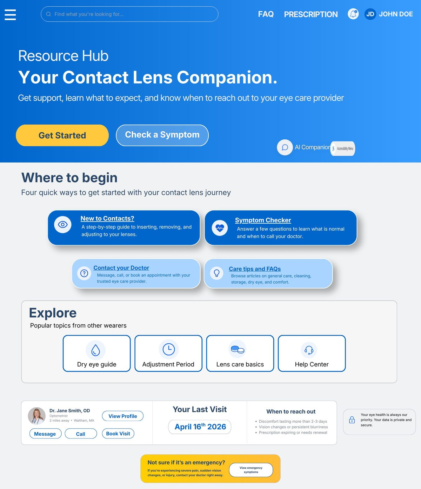
Prototype Hub - Usability Test Results
New to Contacts 4.63 / 5
First-week onboarding & expectation-setting. Ranked #1. "Clean, easy to read and understand and very helpful."
Symptom Checker 4.25 / 5
Guided triage for wearer-reported symptoms. "I really like how it guides you based on what you're experiencing."
Insert & Remove 4.13 / 5
Step-by-step process guidance. "This is exactly the sort of thing I'd expect help with."
The Contact Your Doctor component received the highest organic mention rate: 4 of 8 testers named it unprompted. 5 of 5 testers rated platform likelihood as 5/5 when introduced by their ECP.
Design Iteration - Symptom Checker Results
Usability testing surfaced friction in the Symptom Checker results screen: testers scanned past the guidance cards and missed the reported-symptoms context entirely. The screen went through a full restructure based on that feedback, tracked across a 17-screen version comparison from initial wireframes to final export.
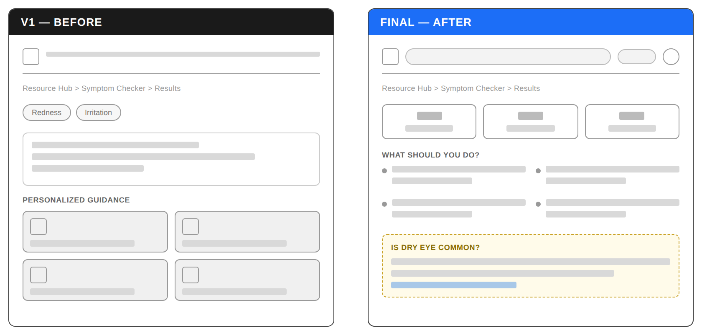
Three changes came directly out of testing: the four guidance cards were flattened into a plain text grid once testers said the card styling implied more content than was actually there; the top section was consolidated into a single scannable row instead of a separate symptom chip list; and a new educational section was added after testers repeatedly asked whether their symptoms were normal, a question the original design never answered.
Deliverables
Research Plan & ScreenerOnline Survey (n=81)Semi-Structured Interview GuideQualitative CodingAffinity Diagram SynthesisDesk Research ReportSprint Burndown ChartsMid-Fidelity HTML PrototypeUsability Test ProtocolResearch ReportProject RetrospectiveStakeholder Presentation
Project 2 of 7UX Research · Interview Study
Team of 4
Why People Put Off the Dentist
Interviews with patients and dental professionals on what keeps people out of the chair
Context
Team research study, Bentley HFID
Role
Interviewer, note-taker, synthesis
Methods
Interviews, empathy & ecosystem mapping
Duration
Sep 2026
Result
Fear came up in every interview, but it wasn't the only barrier. Cost, trust, and scheduling sat alongside it, and 3 of 4 patients waited for pain before booking. Two of those barriers, trust and timing, weren't in our starting hypothesis.
8 of 8
interviews described fear or discomfort (tools, needles, noises)
4 of 4
patients named cost as a concern
3 of 4
patients wait for pain before booking
Approach
01
Interview
8 one-on-one semi-structured interviews: 4 dental professionals, 4 patients. Every session had a separate note-taker.
02
Map
One empathy map per interview, each built by a teammate who hadn't been in that session, to limit personal bias.
03
Synthesize
Merged all 8 maps into one combined map, then placed the patient's decision at the center of an ecosystem map.
My part: I interviewed two of the dental professionals, took notes on a patient interview, and built two of the eight empathy maps.
From Eight Maps to One
A 20-second pass over our Miro board. No audio.
Key Findings
1
Cost: 4 of 4 patientsEvery patient raised cost, and 3 of 4 professionals called it a main barrier. Insurance mostly showed up as frustration: paying premiums and still getting bills.
2
Fear: 8 of 8 interviewsTools, needles, and noises came up on both sides. Two patients said the unknown was the real problem: not knowing what to expect before walking in.
3
Trust: 3 of 4 patients chose by word of mouthFamily and friends decided which dentist felt safe. Patients and professionals both described suspicion of upselling.
4
Timing: 3 of 4 patients wait for painTwo patients book four months out and struggle to reschedule. One had forgotten what the visit was even for by the time it came around.
It’s like go to pay the dentist or not have a place to live.
The front desk came up with all 4 patients as the point where booking, rescheduling, cost, and coverage questions land at once. Ideas about dentists also come from outside the office entirely, from cartoons and the “scary dentist” stereotype to online reviews patients found hard to trust.
What I’d Change
Our sample split cleanly by gender: all 4 professionals were women and all 4 patients were men. Next time I’d recruit across both groups so patterns aren’t confounded with who we happened to reach.
Deliverables
Learning Plan & HypothesisPatient & Professional Interview Scripts8 Semi-Structured Interviews8 Empathy MapsCombined Synthesis MapEcosystem MapFindings Presentation
Project 3 of 7UX Research · AI Tool Evaluation
Research Study
Understanding Consumer Trust in AI-Based Eye-Health Tools
Contextual inquiry and evaluation framework for AI-assisted vision care experiences
Client
[Vision Care Client] - Confidential
Context
HF710 Applied UX Research, Bentley University
Role
UX Researcher (Lead)
Scope
Consumer-facing AI health touchpoints
Duration
Jan – May 2026
Result
Coded interview and stakeholder data across 3 AI touchpoint types into 8 trust-and-credibility themes, delivering 5 design recommendations for where AI-driven eye-health tools gain or lose patient confidence.
3
AI touchpoint types evaluated: online checkers, in-office kiosks, home test apps
8
trust and credibility themes identified through affinity analysis
5
design recommendations delivered to the client
Problem Statement
AI tools are becoming increasingly embedded in consumer eye care, appearing in online symptom checkers, in-office kiosks, AI-generated health reports, home vision test apps, and remote exam platforms. Despite their growing presence, many consumers feel confused about how these tools work, uncertain about result accuracy, and skeptical about whether to act on AI-generated guidance.
This study focused on identifying exactly where confusion and mistrust arise across these touchpoints, and what design and communication decisions make the difference between an experience that builds confidence and one that causes patients to disengage.
Research Focus Areas
A
Online AI eye-health checkups and symptom-checker chatbotsHow do users interpret AI-generated assessments? What interface patterns increase or reduce confidence in results?
B
In-office AI screening kiosks and AI-generated reportsWhere do clinical-context AI tools produce friction? What do users believe the AI is doing versus its actual function?
C
AI home vision test apps and remote eye examsWhen does uncertainty about AI reliability lead users to abandon or override recommendations?
Why This Work Matters
The expansion of AI into consumer health creates a new class of UX problem: not whether an interface is usable, but whether users can accurately calibrate their trust in what the system tells them. An AI symptom checker users dismiss as unreliable provides no value. One they over-trust can delay appropriate care. The design challenge is calibration, not just clarity.
Process - Qualitative Coding & Synthesis
Working in FigJam, I coded participant transcripts and clustered raw quotes into emergent themes. This affinity analysis surfaced the core dimensions of how users experience AI eye-health tools, including trust and privacy, credibility gaps, AI familiarity, accuracy, and information comprehension.
figjam / ai-platform-coding-and-analysis
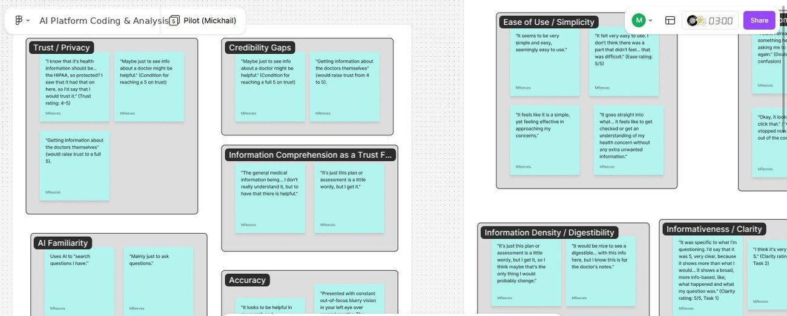
Deliverables
Problem Framing DocumentQualitative Coding & Affinity AnalysisStakeholder Research BriefEvaluation FrameworkDesign RecommendationsAnnotated Concept Sketches
Project 4 of 7Data Story · Sponsored Research
Individual Project
What the Commuting Data Supports
A nine-year data story built for Bentley's Office of Sustainability
Sponsor
Bentley Office of Sustainability
Context
HF730 Visualizing Information, Bentley University
Role
Data Researcher & Visual Designer
Duration
May – Aug 2026
Result
Recommended shuttle expansion over carpool matching to Bentley's Office of Sustainability: commuter demand for shuttle and transit improvements outranks carpool matching by nearly 3 to 1, a pattern that held steady across nine years of data with no decline in drive-alone commuting.
78.7%
drive-alone rate in 2025, unchanged within a few points across nine years
45.8%
of commuters asked for shuttle or transit improvements, versus 16.2% for carpool matching
713
2025 survey respondents, built on nine years of combined data
Project Overview
Bentley's Office of Sustainability wanted to understand campus commuting patterns and identify evidence-based interventions to reduce transportation emissions. I analyzed nine years of commuting survey data (2017–2025) and built a five-panel data story that walks the sponsor from the scale of the problem through to a specific, ranked recommendation.
Approach
01
Explore
Cleaned and combined nine years of survey data across formats, coded 382 open-ended responses into six barrier themes.
02
Analyze
Segmented drive-alone rates by home location and role to identify where the pattern was strongest and who it affected most.
03
Visualize
Built a five-panel data story sequencing evidence toward a ranked, demand-based recommendation for the sponsor.
Research Scale
9
Years of survey data
713
2025 respondents
382
Open-ended responses coded
5
Data story panels
The Data Story
Watch the full sequence, or review each panel below.
Panel Detail
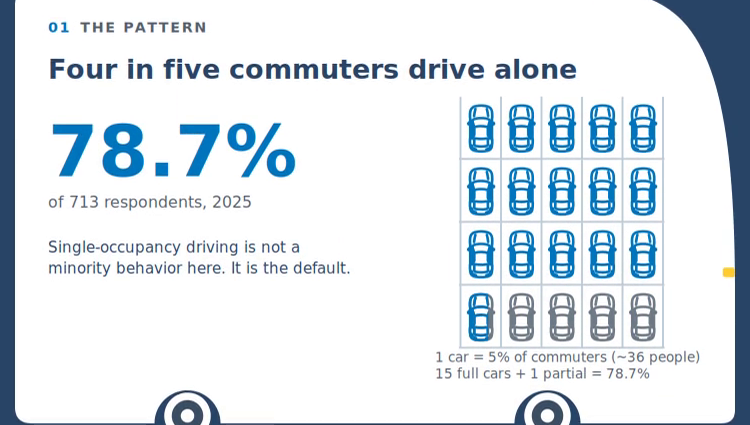
Panel 1 opens on the scale of the problem using a unit chart rather than a bare percentage. Each car icon is countable, making the proportion immediate rather than abstract.
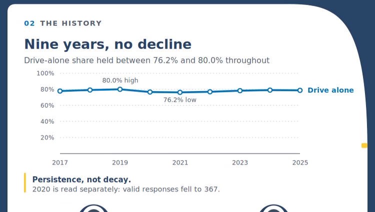
Panel 2 establishes persistence: the drive-alone rate never dipped below 76% across nine years, including through 2020’s disruption.
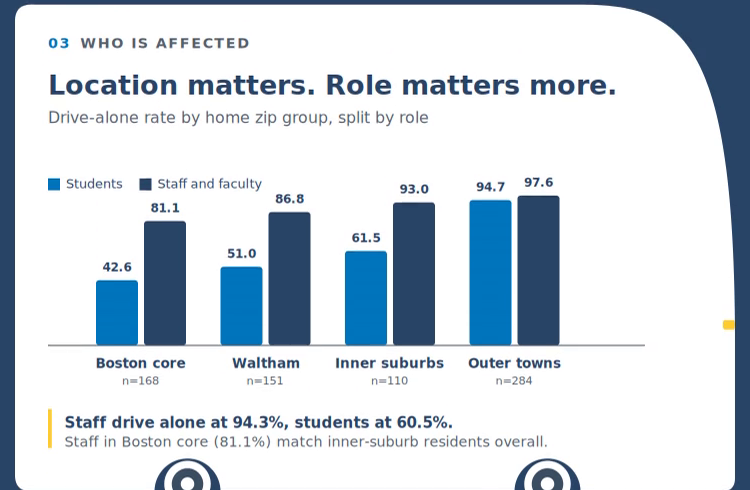
Panel 3 segments the pattern: role predicts drive-alone behavior more strongly than distance from campus does.
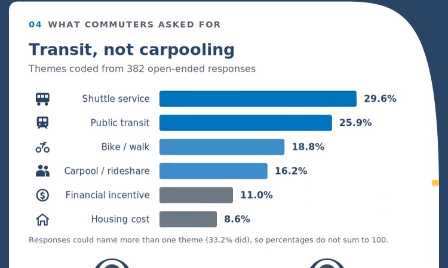
Panel 4 codes what commuters actually asked for in their own words. Shuttle and transit improvements outrank carpooling by a wide margin.
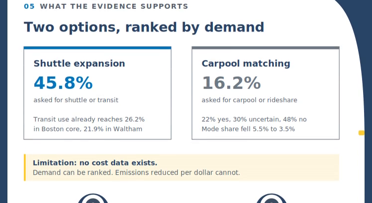
Panel 5 closes with an honest, ranked recommendation and names its own limitation rather than overstating the case. Shuttle expansion has more than double the demand of carpool matching, though cost-effectiveness data was not available to rank impact.
Deliverables
Data Cleaning & CodingLongitudinal Trend AnalysisFive-Panel Data StorySponsor-Facing RecommendationMotion & Static Formats
Project 5 of 7Product Design · Self-Initiated Project
Individual Project
Designing This Portfolio: From One Long Page to a Three-Page Site
How I structured, wireframed, and refined my own UX portfolio for hiring managers
Audience
Hiring managers and recruiters
Role
Designer & Developer
Built With
HTML, CSS, JavaScript, GitHub Pages, AI coding assistant
Timeline
May 2026 – Present
Result
Replaced one long, ever-growing page with a three-page site: a short home page that answers the first questions, a work page with full case studies, and an about page with the full story. Visitors get the short version first and the detail only if they want it.
3
pages (home, work, about) replacing a single long scroll
7
case studies, each opening with its result before the process
65+
published updates since the first version on May 27, 2026
Project Overview
My portfolio has one job: give a hiring manager with a few minutes a clear picture of what I do, proof that I do it well, and an easy way to reach me. I set the structure, content, and design decisions myself, and used an AI coding assistant to build and revise the pages.
Problem Statement
The first version put everything on one page: hero, about, experience, work, and contact. As I added case studies, that page more than doubled in size (from about 45 KB to about 115 KB by mid-July), and the work I most wanted people to see sat far below the introduction. I needed a structure that gave a fast answer first and the full process second.
Approach
01
Define
Set the goal (a first conversation for UX research and design roles), the audience (hiring managers and recruiters), and an inventory of what the site had to hold.
02
Structure
Split the content by how deep a visitor wants to go: summary on home, full case studies on work, background on about.
03
Wireframe
Mapped each page and a mobile view in low fidelity to check hierarchy and flow before relying on color and type.
04
Build & Refine
Built in HTML, CSS, and JavaScript, then reviewed the live pages and fixed contrast, alignment, and motion issues as I found them.
Information Architecture
The content stayed the same. What changed was where it is found and how far a visitor has to go to reach it.
Before
One page, May 2026
Hero
About
Experience
Work
Contact
→
After
Three pages, August 2026
Home
Hero
Case study previews
Additional work
About teaser
Contact
Work
Seven case studies
About
Background
Experience & research
Wireframes
Low-fidelity wireframes for the three pages and the mobile view. The numbers match the notes under each frame.
1
2
3
4
5
6
Home
Hero with a one-line value statement and an Open to Work badge
Two clear actions: View My Work and Get in Touch
Three quick facts as early proof
Previews of the case studies, linked to the full versions
Short about teaser with a headshot, linked to the full story
Contact with resume, email, and LinkedIn
1
2
3
4
5
6
Work
Page header with a back link and a short intro
Project type and my role at the top of each card
Title, subtitle, and key details (client, context, role, duration)
The result comes first, with three headline numbers
Process sections: overview, approach, findings
Deliverables as tags at the end
1
2
3
4
About
Page header: “The full story”
Headshot, name, and three short paragraphs
Core methods and tools panel
Experience and research in two columns
1
2
3
←→
Mobile
A hamburger menu replaces the navigation links on small screens
Sections stack into a single column with full-width buttons
Wide content, like the customer journey map, scrolls sideways instead of shrinking until it is unreadable
Design Decisions
1
Home answers the first questions in one screenWho I am, what I do, and how to reach me: a one-line value statement, an Open to Work badge, and two actions (View My Work and Get in Touch).
2
Results come before processEach case study opens with the outcome and headline numbers, then the method, so a skimmer still sees the proof.
3
One palette and two readable typefacesNavy and bright blue throughout, Syne for headlines to give the site some personality, and Inter for body text so long case studies stay easy to read.
4
Light and dark modesThe site follows the visitor’s device setting. Sections that sit on dark backgrounds, like the hero and the case study cards, stay dark in both modes.
5
Accessibility built inContrast checked against WCAG, descriptive alt text on images, and animation turned off for visitors who set reduced motion.
6
Real content, protected clientsA real headshot and real project screenshots, with client names and identifying details redacted and a note in the footer saying so.
How the Site Evolved
May 27, 2026
First version, one pageHero, about, experience, work, and contact on a single page, with the navy and blue palette, dark mode, and mobile menu from the start.
Jul 14, 2026
The page outgrew itselfMore than double its original size, with case studies buried far down the scroll.
Aug 5, 2026
Work page and accessibility passMoved the case studies to their own page, added the Open to Work badge and link previews, and fixed text contrast against WCAG.
Aug 18, 2026
About page and a lighter home pageMoved the full background to its own page and left a short teaser on home, cutting the home page file by about half.
Aug 19, 2026
Motion that respects the visitorAdded page transitions and turned all animation off for visitors who prefer reduced motion.
Oct 5, 2026
New case studyAdded the dental care research project to the work page and home previews.
Oct 16, 2026
Journey map alignmentFound that the stage cards in the customer journey map sat at different heights, then rebuilt them to share rows so each label, quote, tag, and description lines up across all seven stages.
What I’d Change
I have not yet run a formal usability test on the site. Next I would ask five people, such as recruiters or peers, to find a case study that shows my research methods, and watch where they hesitate and how long it takes. I would also test whether the home page previews give enough on their own, or whether they repeat too much of the work page.
Deliverables
Site MapWireframes (Home, Work, About, Mobile)Visual DirectionAccessibility PassLive Site on GitHub Pages
Project 6 of 7Game UX · Side Project · HF770 Coursework
Individual Project
Moirai: Designing a Turn-Based Duel Screen for a Browser Game
Wireframes, a high-fidelity screen, and the reasoning behind them, for a game I am building with an AI coding assistant
Context
Side project, used for HF770 (Bentley)
Role
Designer and product owner
Tools
Figma, HTML/CSS/JS, AI coding assistant
Platform
Desktop browser first, phone second
Result
A five-screen player-versus-player duel flow, from the challenge invite to the end of the fight, designed so a player half listening to friends on a voice call can see the fight, pick one move, and send it without a slip. The design stops a move being sent twice by accident and keeps the player’s choice if a send fails.
5
desktop wireframes covering the full duel, including failed send and end of fight
2
phone layouts that are real redesigns, not a stretched desktop screen
6.53:1
text contrast on the lightened accent color, up from 3.69:1 (WCAG AA needs 4.5:1)
Project Overview
Moirai is a browser life-sim game I am building, set in a modern world where the Greek and Roman gods are still active. Players take their turns at the same time, and only player-versus-player fights are turn based. Friends play in a desktop web browser while talking on a Discord voice call in a separate window, so desktop comes first. I chose the duel round as the task to design in depth, because it is the moment where a mistake costs the most.
I set the product direction and design decisions, drew the wireframes and the high-fidelity screen in Figma, and supplied my own pixel-art sprites. An AI coding assistant helps me turn those decisions into working game code.
The Question the Design Had to Answer
1
WireframesCan a player who gets challenged use these five screens to get from the invite to the end of the duel? Can they always tell whose turn it is, and whether their last move went through?
2
High-fidelity screenOn the Your move screen, can a new player who is half listening to friends on a voice call see the fight, pick one move, and send it without a slip?
What the Player Needs to Do
My first flow and story map had too many screen details, so I rewrote each step as something the player needs to do, and left button names and messages for the wireframes to decide. Examples:
Know who challenged meKnow what refusing costsSee what just happenedPick one moveKnow my move was receivedRecover if sending failsNever send a move twiceLeave a duel that has stalledCome back after a reload
Low-Fidelity Wireframes
Gray boxes with real sample text, so the drawings test where things go, how big they are, and how heavy they look. Color and fonts came last. Numbers show importance (1 is most), the thickest border is the key information, the dark fill is the one action to take, and dashed boxes mark where my pixel-art sprites go.
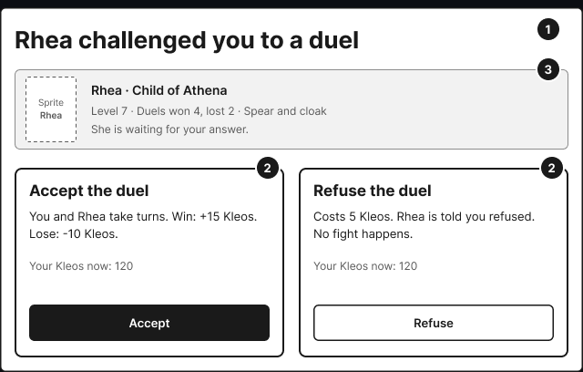
D1 · Challenge inviteThe cost of refusing is shown on the Refuse panel, so no one has to guess.
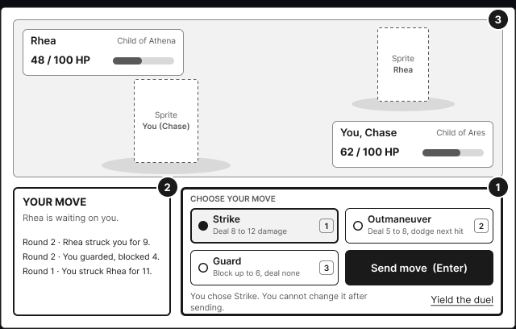
D2 · Your moveStage on top, command box below. Send move is the fourth cell of the 2 by 2 grid.
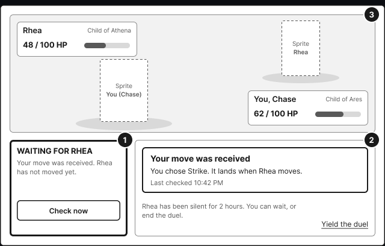
D3 · WaitingSays the move was received and when it was last checked. Check now lets a player look without reloading.
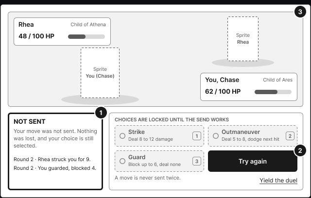
D4 · Move not sentChoices lock until the send works, and the message says nothing was lost.
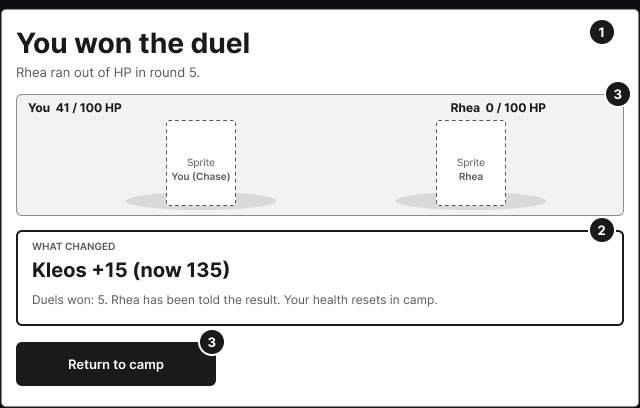
D5 · Duel overShows the result, what changed, and one way back to camp. The refused and lost duels reuse D1 and D5 with different words.
Phone Layouts
Moirai also opens in a phone browser, so I redesigned the two busiest screens for it instead of shrinking the desktop version. The order of importance stays the same, and only the positions change.
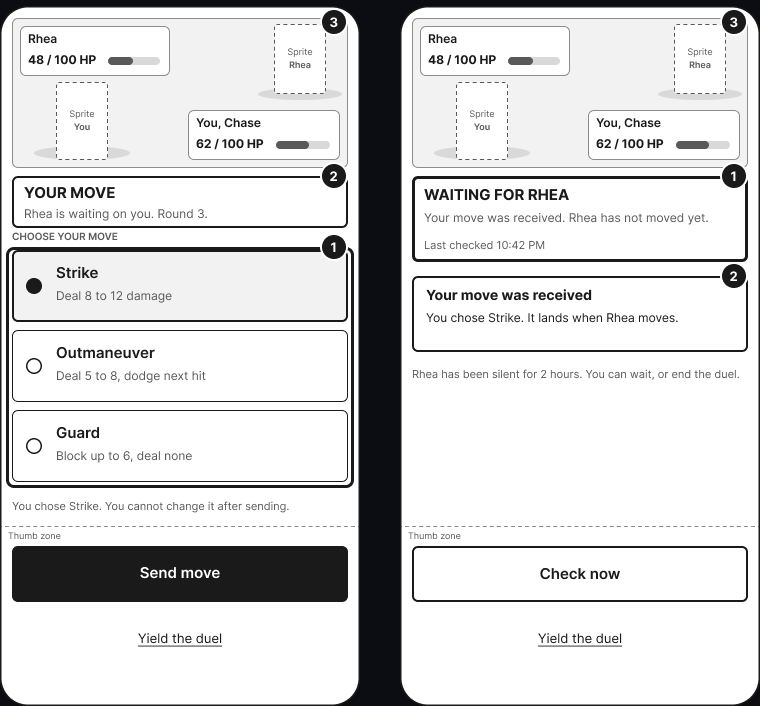
Your move and Waiting, on a phoneThe stage drops from 326 to 150 px. Moves become 72 px rows where the whole row picks the move. Send move and Check now move to the bottom, where the thumb lands. Yield stays below them, never inside the list of moves.
High-Fidelity Screen
The Your move screen in a browser window, using sprites from my own game. Gold marks only what to do next: the status, the picked move, and Send move. Type is Cinzel Bold for short labels and EB Garamond for sentences, with no sentence smaller than 18 px so it reads easily on a call.
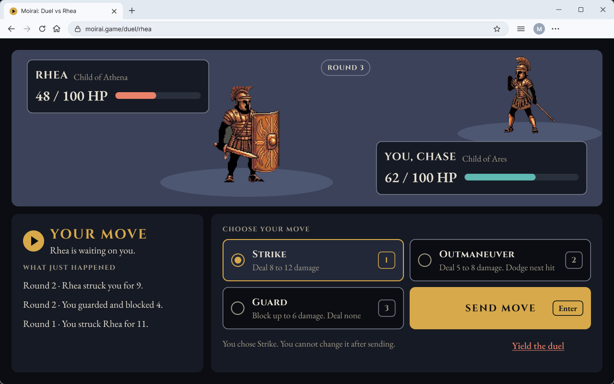
Your move, desktopFighters face off on a diagonal, like a monster-battle game. Each name plate sits across from its sprite, so health never covers a character.
Design Decisions
1
A familiar battle stage, desktop firstThe stage is on top and the command box is below, a layout many players know from turn-based games (Jakob’s Law). I turned down a two-pane dashboard, which would put the log first, and a stretched phone column, which leaves a wide window mostly empty.
2
Pick a move, then send itA move cannot be undone, and a player half listening on a voice call will misclick. So the moves are a radio group with a separate Send move button. I turned down tap to commit (faster, but one slip costs a whole round) and undo after sending (the other player can answer before you notice). The cost is one extra click, so keys help: arrows choose, Enter sends, and 1 to 3 work only while the moves have focus.
3
Yield asks first, and stays apartYielding ends the duel, costs Kleos, and is rare, which is when a confirmation fits. The pop-up says what will happen, neither button is the default, and the keyboard starts on Cancel. Yield sits outside the grid so it is easy to find and hard to hit by accident.
4
Always say whether the move went throughThe waiting and failed-send states tell the player exactly what happened and what is safe: the move was received, or it was not sent and nothing was lost. A move is never sent twice.
Accessibility
Accessibility shaped the design from the start, not as a final check.
1
Contrast fixed before anything elseThe game’s terracotta (#c1502e) measured 3.69:1 on the panel color, which fails for text. I lightened it to #e8836a (6.53:1) and the teal to #5fb8b1, then checked the rest with the WebAIM Contrast Checker.
2
Color is never the only clueStatus is an icon, words, and a heavier frame. Health is a number and a bar. Yield is underlined. The sprites are decoration and carry no information.
3
Keyboard and target sizeOne tab stop for the move grid, Esc closes the pop-up and returns focus to Yield, and every target is at least 44 px tall (WCAG 2.2 asks for 24 px). Gaps of 12 px mean a slip lands on empty space. A disabled Send move stays focusable and keeps readable text, so a keyboard user can find it and hear why it is off.
Designing With an AI Coding Assistant
I build side projects with an AI coding assistant, and the design work is what keeps it pointed in the right direction. The pattern is the same on each project:
1
I decide what to build and whyThe player tasks, the screen layout, the rules for undo and confirmation, and the accessibility targets come from my own design thinking and research, written down before any code.
2
I supply the craft the assistant cannotThe pixel-art sprites, the visual style, and the wireframes are my own work. The assistant turns specifications into code and I review the result in the running game.
3
I test with real players and iterateOn a Roblox game I am building, friends who match the target audience play it and give feedback, and I revise and repeat. For Moirai, the next step is a usability test of the duel with a real person.
What I’d Change
I have not yet tested these screens with a player. The wireframes are a prediction, and the usability test will show whether the Send move step feels like protection or like friction, and whether the waiting screen answers “did it go through?” at a glance.
From a block sketch to a finished badge for Bentley’s graduate Open House
Context
Bentley Graduate Admissions, Open House
Role
Designer (Graduate Student Ambassador)
Tool
Figma
Event
November 7, 2026
Result
A name badge for the graduate Open House that shows four things at a glance: the event, the person’s role, their name, and their program and date.
Project Overview
As a Graduate Student Ambassador, I designed the name badges for Bentley’s graduate Open House in Figma. A name tag is read for a second or two, from a few feet away, by someone who is also trying to talk. The design had to make the name and role easy to read and leave everything else secondary.
From Sketch to Final
I started with a simple block sketch to settle the order of information before choosing any color or type. The sketch splits the badge into three zones: the event on top, the person in the middle, and the program and date at the bottom. The finished badge keeps that structure.
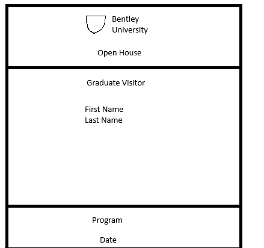
SketchThree zones, placed in order of importance. No color, so the layout is judged on its own.
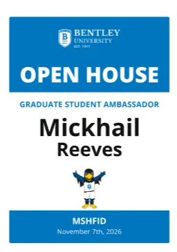
Finished badgeThe same three zones, now with the logo, a role line, large black name text, the mascot, and two blue bands to frame the page.
Design Decisions
1
The name is the biggest thing on the badgeBlack type on white, in the largest size. The first name is set bigger than the last so it is the part that can be read quickly in conversation.
2
The role gets its own lineThe sketch only had a placeholder for the visitor type. The final puts “Graduate Student Ambassador” above the name, so a prospective student can tell who to ask for help.
3
Color separates the zones, not the meaningBlue bands mark the event at the top and the program and date at the bottom, and white space holds the person. Nothing depends on color alone, because every band also has words in it.
4
The mascot adds warmthIt sits under the name and fills the space the sketch left empty, which makes the badge feel friendly for a visitor meeting the school for the first time.
What I’d Change
The date at the bottom is the smallest text on the badge, set in white on blue. I would make it larger and heavier so it holds up on a printed badge, and I would check the printed contrast of the blue bands against the white text before the next event.